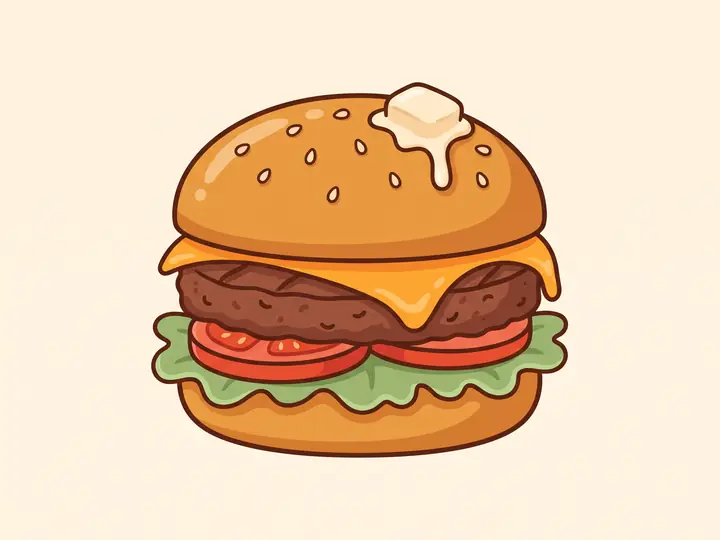
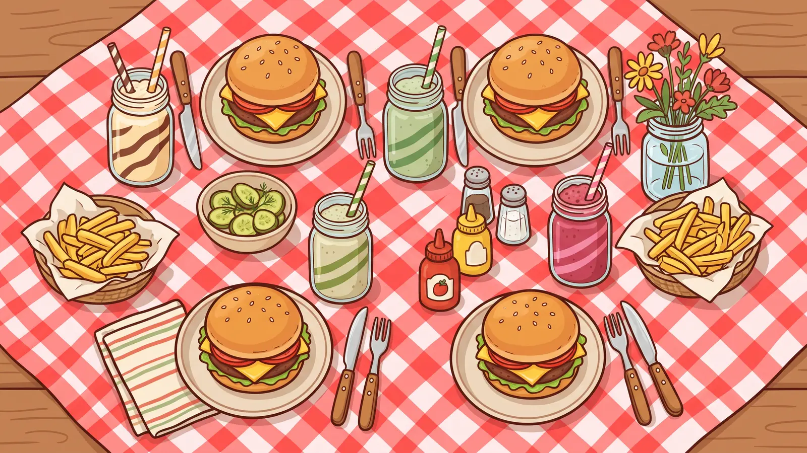

The Butterbun
$12Our everyday classic. One hand-pressed patty, melty cheddar, lettuce, tomato and a soft buttered bun.
House favouriteFamily owned since 1998
Neighbourhood burgers on buttery toasted buns, crayons on every table, and second helpings nobody keeps track of.

How we build it
Nothing complicated, just done properly. The buns come out of the oven at seven, the patties are pressed by hand, and the cheese goes on early so it has time to melt all the way to the edges.
Tell us what your little one does and doesn't like and we will happily rebuild the whole thing. No pickles, extra cheese, cut in half — none of it is a problem.
Our story
Marta cooked for a full house every Sunday and never once let anyone leave hungry. The burger on our menu is more or less hers, give or take a spoonful.
In 1998 the family opened a small room on Founders Yard with eight tables and a very loud milkshake machine. We have added four tables since. The machine is still loud, and the same recipe card is still taped inside the kitchen cupboard.
Everybody leaves a little fuller than they arrived.
— Marta & Otto Kivi, second generation
Come by
| Mon – Thu | 11:00 – 21:00 |
| Fri | 11:00 – 22:00 |
| Sat | 09:00 – 22:00 |
| Sun | 09:00 – 20:00 · kids eat free |
| Pancake mornings | Sat & Sun till noon |
Hungry already?